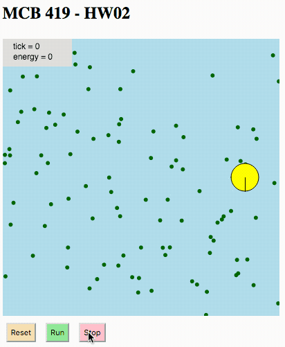

Introduction
This assignment builds on last week’s homework in which you
created a bot that moves around the arena in a circular path.
This week you will add 100 ‘food’ pellets to the arena,
which the bot will consume as it moves in its circular trajectory.
The resulting simulation will look something like this:

Specifications
The arena, bot specs, and bot trajectory are as specified in hw01.
New features that you need to add:
- bot has a new field called ‘energy’
- bot energy in initialized to 0 on reset
- 100 pellets scattered randomly in the arena
- pellet positions are (re)randomized on reset
- pellets are drawn as dark green dots with a radius of 3 pixels
- bot has a new method called ‘consume’
- pellets are consumed if bot body overlaps pellet center point
- consuming a pellet increases the bot energy by 1
- when consumed, pellet is moved to a new random location
(thus there are always 100 pellets in the arena)
- add a text display of bot energy in the upper left corner
(below the tick display)
Instructions
- open the HW02 template file
(right-click to open in a new tab or window)
- login to the p5js editor (so you can save changes)
- duplicate the template (you now have a copy that you can edit and save)
- edit Bot.js and sketch.js as appropriate
- save, run, debug, edit, repeat until things are working properly
- use “Check implementation” button to help test your code
- answer the questions in the index.html file
- SAVE YOUR PROJECT in the p5js editor (this step is important)!
- submit the url to mcb419@gmail.com with subject: HW02
– End of assignment –